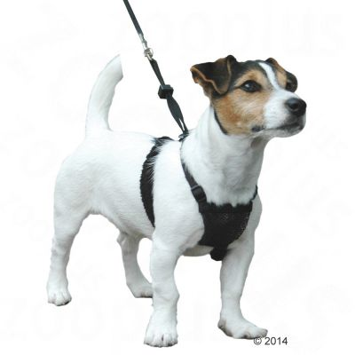
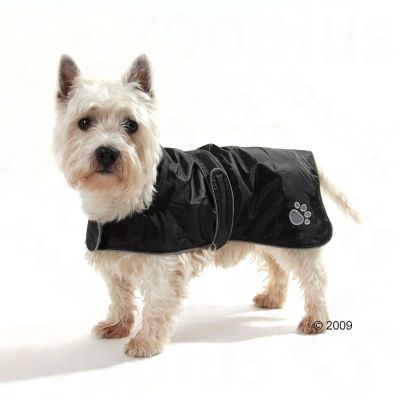
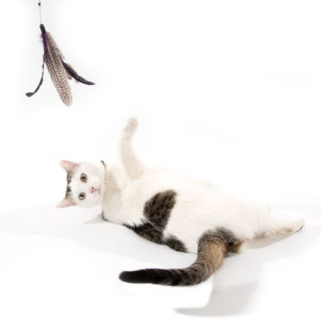
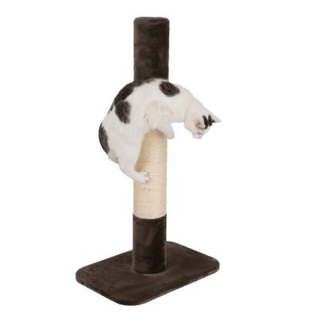
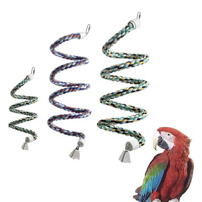
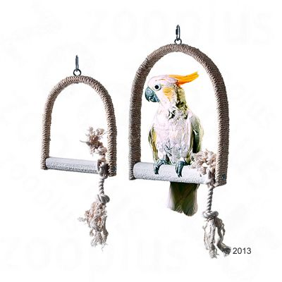
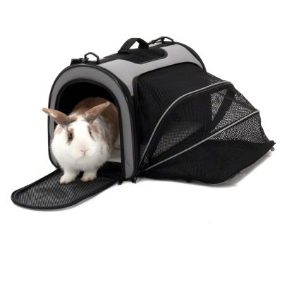
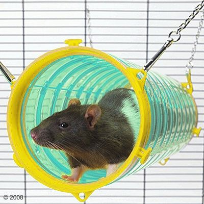
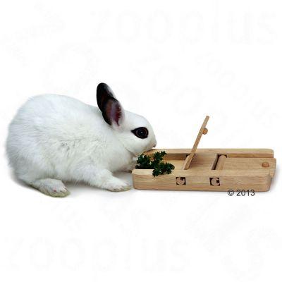
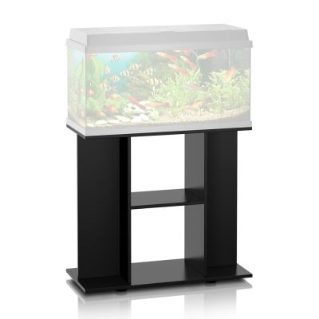

Dog
|  | Non-Pull Dog HarnessThis Company of Animals Non-Pull Dog harness puts a stop to your dog pulling during walks. and allows you to enjoy relaxed walks with your dog by your side. Soft nylon straps and an elastic mesh chest panel give the dog a high level of comfort and good freedom of movement, whilst still allowing the owner to remain in control.The soft Sherpa Sleeves on the chest straps make the harness extra comfortable: They don't cut in or catch on skin or hair, even if the dog pulls hard against them. The straps meet at the chest, running under the front legs and meeting again at the back. The practical sliding security cord lock that tightens the straps from the back allows the harness to be adjusted precisely to fit your dog. If your dog pulls on the lead, the harness tightens around it, which allows you to maintain control and ultimately gently deters the dog from pulling and to return to normal controlled walking. |
Price:£20 Delivery:£5 |
|  | Dog JacketWalks in the cold and rainy weather can be a really unpleasant experience for freshly clipped dogs and puppies with short coats. The dog coat is a great solution to this problem as it protects from the cold, rain, and wind thanks to its durable nylon material. The coat is also lined with a matching extra soft fleece. Easy to put on, due to the Velcro closures around the chest and stomach, the leg loops guarantee an easy, comfortable, and secure fit, while the reflecting seams and paw pattern care for the safety of your dog in the dark and in other reduced visibility conditions. |
Price:£35 Delivery:£5 |
Cat
|  | Feather Waggler Cat ToyCat wagglers are very popular toys. All you need to do is waggle it around and your cat will try to pounce on it. It's a great way to indulge your cat's natural hunting instincts while playing together. And because it is approx. 55cm long your hand is far enough away to avoid getting scratched. |
Price:£4 Delivery:£2 |
|  | XXL Jumbo Scratching PostThe top quality XXL Jumbo scratching post is perfect for cats of all ages. Both small and large cat breeds will enjoy being able to stretch out and scratch against this scratching post. The base plate covered in plush material keeps the scratching post stable, even when your cat climbs up the post. You can choose to assemble the scratching post with a continuous sisal wrap all the way up, or break up the wrap with a plush ring that matches the colour of the base plate. |
Price:£70 Delivery:£8 |
Bird
|  | Rope CoilThis cotton coil is an attractive alternative to conventional perches. It can be hung from the top of the cage with a screw and have its length varied by twisting the wire core. The coil features a bell at the bottom for playing. |
Price:£7 Delivery:£2 |
|  | Swing with Lime PerchSwings make your bird feel like it is perched on a swaying branch in the wind giving some movement within its cage. Therefore, it is important that the swing is large enough and it meets the requirements of your feathered friend. The sisal swing is special due to its top quality, lime perch. This can help your bird to keep their beak and claws sharp and short, like they would in the wild. The bird's feet muscles will also be kept in better shape, helping to avoid pressure sores. |
Price:£9 Delivery:£2 |
General
|  | Pet Carrier Freedom with Side ExtensionThe Freedom pet carrier is a practical, all-round product. It's ideal for transporting small pets such rabbits and guinea pigs as well as cats and smaller dogs. There is a large opening on the end of the carrier with a double zipper which gives easy access when you are placing your pet into or removing it from the carrier. This opening, as well as the opening in the top of the carrier, has nylon net inserts. Your pet can look out and see what is happening. Inside the carrier there is a removable, washable base which is covered on the top with synthetic fleece to keep your pet cosy and warm. |
Price:£24 Delivery:£5 |
|  | Play Tunnel Giant TubeFerrets, chinchillas and rats need plenty of activity to stave off boredom. This large tunnel by Savic can be hung up in your pet's cage and offers plenty of fun! The tunnel comes complete with a hanging fixtures and can be attached to any wire mesh cage. |
Price:£12 Delivery:£5 |
|  | Hide and Seek ToyYour small pet will be occupied for hours with this interactive intelligence toy. The Living World Green Hide and Seek Toy is specially designed to encourage more play and activity in your pet's daily life. Hide little treats and snacks inside the little compartments, and watch as your pet snuffles them out by lifting or pushing the lids. This toy is made of environmentally friendly rubber wood, and certified non-toxic, making it safe for your pet to play with and gnaw on. |
Price:£3 Delivery:£1 |
|  | Aquarium CabinetThe aquarium cabinet has been manufactured to be sturdy and secure under the weight of a filled aquarium. It's really versatile since it can also support a terrarium or a bird cage, and has room to store aquarium equipment, food and accessories underneath. Assembly of the cabinet is incredibly easy. Once you have sorted the wooden panels according the assembly guidelines, getting your Juwel cabinet up and running will be easy as pie! |
Price:£55 Delivery:£12 |